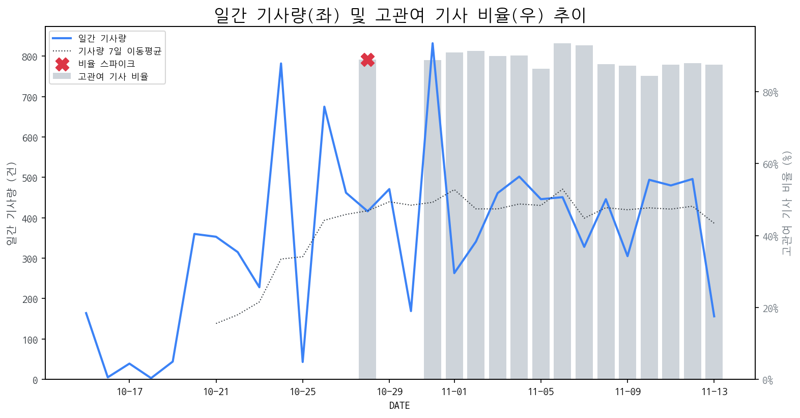

1
시장 활동 지표
기사량 추세 & 이상 징후 탐지
시장의 '전체 기사량'이 평소보다 비정상적으로 급증했는지(Spike)를 차트로 확인하고, LLM이 분석한 급등의 핵심 원인을 파악할 수 있음

고관여 기사란? 산업 연관 키워드로 수집된 기사들 중 디스플레이 키워드에 가중치를 반영하여 도출된 관련성 높은 기사
수집된 기사 수 (2025-11-13)
156
-65% WoW
기사량 변동 수준 (7일 이동평균 대비)
±6.7% 이하
2
오늘의 키워드
급격한 관심 ↑, 주목해야 할 키워드
1
레노버
+2.5σ
JSON 디코딩 실패
Related Metrics
금일 언급량: 7, 전일 대비: +7
Interpretation
JSON 디코딩 실패
Next Step
핵심 토픽 'IT_OLED_Topic' 관련 신호입니다. 3번 섹션(키워드 감성분석)에서 해당 토픽의 감성 변동을 교차 확인하세요.
3
실시간 Risk 키워드
경계해야 할 시그널 탐지
특정 토픽의 부정 감성 점수가 급등할 때 이를 즉시 탐지하고, "근거 기사" 링크를 통해 리스크의 실체를 빠르게 파악할 수 있음
!
6G 통신 기술 디스플레이
하락폭: 0.51
- AI 분석 실패 (ResourceExhausted)
Current Status
오늘 점수: 0.49, 7일 평균: 1.00
Key Evidence Article (Most Negative)
!
Transparent_Display_Topic
하락폭: 0.51
- 경쟁 심화 및 프리미엄 디스플레이 시장 성장 둔화 우려: LG전자의 TV·가전 호주 소비자 평가 1위 소식은 긍정적이나, 동시에 경쟁사들의 추격 및 시장 경쟁 심화를 의미합니다. 특히 투명 디스플레이는 프리미엄 시장에 속하는데, '시간 절약형 AI 가전'이 대세가 되면서 프리미엄 가전 소비 트렌드가 변화하고, 투명 디스플레이의 성장세가 둔화될 수 있다는 우려를 낳습니다.
- 투명 디스플레이 외 다른 기술 트렌드 부각에 따른 관심 저하: 쿠팡의 '쿠가세' 완판 소식에서 LG 등 주요 가전 브랜드의 인기가 확인되지만, 투명 디스플레이 관련 언급은 없습니다. 몬스타PC의 신규 케이스 출시, 백화점 및 마트 관련 기사 등은 전반적인 소비 시장 동향을 보여주지만, 투명 디스플레이 자체에 대한 직접적인 관심 환기는 이루어지지 않고 있습니다. 이러한 상황이 지속될 경우, 투명 디스플레이에 대한 투자 심리 위축 및 관련 기술 개발 동력 약화로 이어질 수 있습니다.
Current Status
오늘 점수: 0.49, 7일 평균: 1.00
Key Evidence Article (Most Negative)
!
차량용 HDR10 디스플레이 디자인
하락폭: 0.50
- 경쟁 심화 및 기술 변화 압박: LG전자의 우수 디자인 수상과 벤츠와의 협력 확대는 차량용 디스플레이 시장 경쟁 심화를 의미합니다. 특히, LG의 OLED 기술 우위는 HDR10 디스플레이를 주력으로 하는 제조사에 기술 혁신 압박을 가중시키고, 감성 점수 하락에 영향을 미칠 수 있습니다.
- 친환경 소재 및 제조 기술 트렌드 대응 필요성 증가: ams오스람의 친환경 Flex PCB 기술 공개는 자동차 부품, 특히 조명 분야에서 지속 가능한 소재 및 제조 기술 도입이 확대되는 추세를 보여줍니다. 이는 HDR10 디스플레이 제조사에게도 친환경 소재 적용 및 탄소 배출 감축 노력을 요구하며, 투자 부담 증가에 대한 우려를 반영하여 감성 점수 하락을 야기했을 가능성이 있습니다.
Current Status
오늘 점수: 0.49, 7일 평균: 0.99
Key Evidence Article (Most Negative)
!
벤츠 전장 시장 진출
하락폭: 0.43
- 디스플레이 패널 시장 경쟁 심화 우려: 벤츠의 삼성, LG와의 협력 강화는 단순히 부품 공급처 다변화를 넘어, 자체적인 전장 시스템 개발 및 생산 가능성을 시사합니다. 특히, 한국에 구매 허브를 설립하는 것은 벤츠가 차세대 디스플레이 기술 (AI Glass 등) 확보에 적극적으로 나설 것임을 의미하며, 이는 기존 디스플레이 제조사에게는 패널 공급 경쟁 심화 및 가격 인하 압력으로 작용할 수 있습니다.
- 미래차 디스플레이 기술 주도권 경쟁 심화: 벤츠가 HS효성과도 협력을 논의하는 것은 단순히 디스플레이 소재/부품 협력을 넘어, 미래차에 특화된 디스플레이 기술 (예: 투명 디스플레이, 플렉서블 디스플레이) 공동 개발 가능성을 내포합니다. 이는 현재 디스플레이 제조사들이 주력하고 있는 OLED 중심의 시장 구도를 흔들 수 있으며, 미래차 디스플레이 기술 주도권 경쟁에서 뒤쳐질 경우, 장기적인 성장 동력 약화로 이어질 수 있습니다.
Current Status
오늘 점수: 0.49, 7일 평균: 0.92
Key Evidence Article (Most Negative)
!
게이밍 AI 모니터 시장
하락폭: 0.36
- GPT-5.1 출시 기대감에 따른 게이밍 AI 모니터 시장 관심 저하: 아서 헤이즈의 UNI 투자와 GPT-5.1 출시 소식은 게이밍 AI 모니터 자체에 대한 관심도를 분산시켜 단기적인 투자 심리 위축을 초래할 수 있습니다. 디스플레이 제조 기업은 차세대 AI 모델에 최적화된 디스플레이 기술 개발 필요성이 증대될 수 있으며, 기존 게이밍 AI 모니터의 차별화 전략 수립이 중요해질 수 있습니다.
- AI, 전장, 배터리 분야 빅딜 경쟁 심화에 따른 투자 우선순위 변화 가능성: 삼성, LG, SK 등 대기업들이 AI, 전장, 배터리 분야에 투자를 집중하면서, 상대적으로 게이밍 AI 모니터 시장에 대한 투자 우선순위가 낮아질 수 있습니다. 이는 디스플레이 제조 기업의 R&D 자금 확보 경쟁 심화로 이어질 수 있으며, 자체적인 AI 기술 역량 강화 또는 외부 협력을 통한 기술 확보 전략이 중요해질 것입니다.
Current Status
오늘 점수: 0.49, 7일 평균: 0.85
Key Evidence Article (Most Negative)
!
2025년 디스플레이 소재 혁신
하락폭: 0.36
- 전방 시장 투자 집중 및 소재 혁신 우선순위 변화 가능성: 기사 제목들을 종합적으로 고려할 때, 삼성, LG, SK 등 주요 기업들이 AI, 전장, 배터리 등 다른 미래 사업 분야에 투자를 집중하며, 디스플레이 소재 혁신에 대한 투자 우선순위가 일시적으로 낮아질 수 있다는 우려가 반영된 것으로 판단됩니다. 특히, '車 반도체에서 OLED 까지…벤츠·삼성, 전장 동맹 강화' 기사는 디스플레이, 그중에서도 OLED가 전장 부품으로써 주목받고는 있지만, 근본적인 디스플레이 소재 혁신보다는 완성품 형태의 OLED에 더 집중하고 있음을 시사하여 감성 점수 하락에 영향을 미쳤을 수 있습니다. 디스플레이 제조 기업은 새로운 소재 개발 및 도입 속도 둔화, 경쟁 우위 확보의 어려움 등의 잠재적 영향을 받을 수 있습니다.
- 배터리 소재 시장 강세 및 디스플레이 소재 시장 상대적 위축 심리: '배터리 심장 잡았다…천보, 차세대 전해질로 글로벌 전기차 시장 질주' 및 '리튬 관련주, '어깨춤 으쓱으쓱' 중앙첨단소재·후성·에코프로·유일...' 기사는 배터리 소재 시장의 성장세와 투자자들의 긍정적인 심리를 보여줍니다. 이는 상대적으로 디스플레이 소재 시장에 대한 투자 매력도 감소 및 혁신에 대한 기대감 저하로 이어져 감성 점수 하락에 영향을 미쳤을 수 있습니다. 디스플레이 제조 기업은 우수 인력 및 투자 자원의 배터리 소재 분야 쏠림 현상, 디스플레이 소재 혁신 동력 약화 등의 잠재적 영향을 받을 수 있습니다.
Current Status
오늘 점수: 0.49, 7일 평균: 0.85
Key Evidence Article (Most Negative)
!
폴더블폰 시장, 중국 견제
하락폭: 0.32
- 중국 디스플레이 기술 추격 심화 및 정부 지원 확대: '중국에 쫓기는 디스플레이…초격차 위한 국가연구 플랫폼 추진' 기사를 통해 중국의 디스플레이 기술 경쟁력 강화가 감성 점수 하락의 주요 원인으로 작용했을 가능성이 높습니다. 특히 폴더블폰 시장은 기술 집약도가 높아 중국의 빠른 추격은 삼성디스플레이 등 국내 기업의 시장 경쟁력 약화 우려를 증폭시킬 수 있습니다. 또한, 중국 정부의 적극적인 디스플레이 산업 지원 정책은 국내 기업에게 더욱 큰 부담으로 작용하여 투자 심리 위축을 야기할 수 있습니다.
- 폴더블폰 시장 경쟁 심화 및 수익성 불확실성 증대: '삼성 '갤럭시Z 트라이폴드' 세부 사양 유출.. 2억 화소 메인 카메라 장착', '삼성전자, 세 번 접는 '갤럭시 Z 트라이폴드' 12월 출시한다' 기사를 통해 삼성의 폴더블폰 라인업 확장이 예상되지만, 동시에 경쟁 심화 및 수익성 확보에 대한 불확실성이 증가할 수 있습니다. 특히, 폴더블폰 시장은 높은 기술력을 요구하며, 수율 확보 및 생산 비용 절감이 중요합니다. 중국 경쟁사들의 폴더블폰 시장 진입은 가격 경쟁을 심화시켜 디스플레이 제조 기업의 수익성을 악화시킬 가능성이 높습니다. '갤럭시XR 올레도스 '테스트 양산' 진입' 기사는 새로운 시장 개척 노력이지만, 아직 시장성과 수율에 대한 불확실성이 존재합니다.
Current Status
오늘 점수: 0.49, 7일 평균: 0.81
Key Evidence Article (Most Negative)
!
친환경 스마트폰 디스플레이 개발
하락폭: 0.22
- 원가 상승 및 기술 경쟁 심화 우려: 초고해상도 FMM 개발(기정원 방문) 및 친환경 Flex PCB 제조 기술 공개(ams오스람) 기사는 디스플레이 해상도 및 친환경 부품에 대한 기술 경쟁 심화를 암시하며, 이는 제조 기업의 연구 개발 투자 부담 증가 및 원가 상승 압력으로 이어져 수익성 악화를 유발할 수 있다는 우려를 낳습니다. 감성 점수 하락은 이러한 비용 증가 부담에 대한 시장의 부정적 반응을 반영하는 것으로 해석됩니다.
- OLED 연관 질병 부각에 따른 소비자 불안감 증폭: '눈 중풍' 치료 관련 기사는 OLED 디스플레이 장시간 사용에 대한 잠재적 건강 문제를 상기시키며, 소비자들의 불안감을 자극할 수 있습니다. 이는 친환경 스마트폰 디스플레이 개발의 긍정적 효과를 상쇄하고, OLED 기술 자체에 대한 부정적 인식을 확산시켜 관련 산업 투자 심리 위축 및 수요 감소로 이어질 가능성이 있습니다.
Current Status
오늘 점수: 0.49, 7일 평균: 0.71
Key Evidence Article (Most Negative)
!
마이크로 LED 기반 차세대 디스플레이
하락폭: 0.18
- 마이크로 LED 기술 사업화 경쟁 심화 우려: 고려대와 셀쿱스의 MOU 체결 기사는 마이크로 LED 기술 상용화 경쟁이 더욱 치열해질 수 있음을 시사합니다. 디스플레이 제조 기업 입장에서 이는 기술 우위 확보 및 차별화 전략 수립의 필요성을 증대시키며, 투자 부담 증가 및 시장 선점 실패 가능성으로 이어질 수 있습니다.
- 타 산업 분야 마이크로 LED 적용 확대 가능성: 푸조의 폴리곤 콘셉트 공개 및 마이크로 칩의 LAN866x 출시 기사는 자동차, IT 등 다양한 산업 분야에서 마이크로 LED 기술 적용이 확대될 수 있음을 보여줍니다. 이는 디스플레이 제조 기업에게는 새로운 시장 기회를 제공하지만, 동시에 타 산업과의 경쟁 심화 및 기술 표준 변화에 대한 빠른 대응 필요성을 야기합니다.
Current Status
오늘 점수: 0.49, 7일 평균: 0.67
Key Evidence Article (Most Negative)
4
주요 이벤트 모니터링
실시간 산업 동향 파악을 위한 주요 활동
최근 발생한 주요 기업들의 신제품 출시, 투자 등 주요 이벤트를 제공하여 매일 경쟁사 동향을 확인할 수 있음
2차전지 관련 기업들의 주가가 상승세를 보이고 있다. KG케미칼, 엘앤에프, 후성, 유일에너테크 등이 투자자들의 관심을 받으며 주가 상승에 영향을 받았다.
Impact
2차전지 기술 발전 및 투자 증가는 디스플레이 장비의 전력 효율 개선 및 새로운 디스플레이 소재 개발에 간접적으로 영향을 미쳐 관련 수요 증가를 유발할 수 있다.
Next Step
디스플레이 제조 기업은 2차전지 관련 기술 동향을 지속적으로 모니터링하고, 에너지 효율을 높이는 디스플레이 구동 기술 및 소재 개발에 대한 투자 기회를 모색해야 한다.
티로보틱스 안승욱 대표이사는 로봇 기반 자동화 솔루션을 통해 디스플레이 제조 공정 효율성을 높이는 데 기여하고 있다. 그의 리더십 하에 티로보틱스는 디스플레이 산업 내 로봇 기술 적용 확대를 추진 중이다.
Impact
티로보틱스의 성장과 안승욱 대표의 역할 증대는 디스플레이 제조 공정 자동화 및 정밀도 향상에 기여하여 관련 장비 시장 경쟁 심화 및 기술 혁신을 가속화할 수 있다.
Next Step
디스플레이 제조 기업은 티로보틱스와의 협력 기회 모색 또는 자체 로봇 자동화 기술 도입 검토를 통해 생산 효율성 향상 및 경쟁력 강화를 도모해야 한다.
덕산네오룩스가 4분기 최대 실적을 달성할 것으로 예상된다. 핵심은 BPDL(Blue Prime Dopant Layer)의 공급 확대 여부에 달려있다.
Impact
덕산네오룩스의 BPDL 공급 확대 성공 여부는 OLED 재료 시장 경쟁 구도 변화 및 패널 제조사들의 공급망 전략에 영향을 미칠 수 있다.
Next Step
덕산네오룩스의 BPDL 기술 발전 및 생산 능력 확장 추이를 면밀히 모니터링하고, 자체적인 BPDL 기술 개발 또는 공급망 다변화 전략을 고려해야 한다.
삼성전자가 잉크젯 프린팅 OLED 기술을 여전히 옵션으로 고려하고 있음을 시사했다. 이는 대형 OLED 생산 방식 다변화 가능성을 내비친 것으로 해석된다.
Impact
잉크젯 프린팅 OLED 기술 발전 및 상용화에 대한 기대감을 높여, 관련 장비 및 소재 시장 성장을 촉진할 수 있다.
Next Step
잉크젯 프린팅 기술의 기술적/경제적 타당성을 면밀히 검토하고, 기존 기술과의 경쟁력 비교를 통해 투자 전략을 수립해야 한다.
한국, 중국, 일본 기업들이 XR 기기의 핵심 부품인 올레도스(OLEDoS) 시장을 선점하기 위해 기술 개발 및 생산 경쟁을 가속화하고 있다. 이는 XR 시장의 성장과 함께 고성능 디스플레이 수요 증가를 의미한다.
Impact
올레도스 기술 경쟁 심화는 XR 기기 디스플레이 성능 향상 및 가격 경쟁력 확보를 통해 XR 시장 확대를 가속화할 것이다.
Next Step
디스플레이 제조 기업은 올레도스 기술 경쟁력 확보 및 차세대 XR 디스플레이 기술 개발 투자를 확대하여 시장 변화에 선제적으로 대응해야 한다.
5
지금 주목해야 할 뉴스 TOP 3
벤츠 CEO "삼성·LG와 미래 전략 논의…서울에 亞 구매 허브 설립"
메르세데스-벤츠는 아시아 시장과의 협업을 강화하기 위해 내년 1월 1일 서울에 아시아 지역의 구매·공급사 품질과 사업 개발을 총괄하는 거점을 설립한다.
2차전지 관련주, '어깨춤 으쓱으쓱' KG케미칼·엘앤에프·후성·유일에너...
로컬 요약 모델 실행 중 오류 발생: 제목을 클릭하여 기사 전문을 확인할 수 있습니다.
삼성전자 "잉크젯 프린팅 OLED , 하나의 옵션"
손태용 삼성전자 부사장은 14일 중국 쑤저우에서 열린 CSOT의 연례행사(DTC 2025) 전시장에서 취재진이 'CSOT의 잉크젯 프린팅 OLED 양산 가능성을 어떻게 보느냐'고 묻자, "삼성전자는 세트 업체이고, 패널 원천 기술을 갖고 있진 않기 때문에 (잉크젯 프린팅 OLED) 양산 가능성을 판단하긴 어렵다.